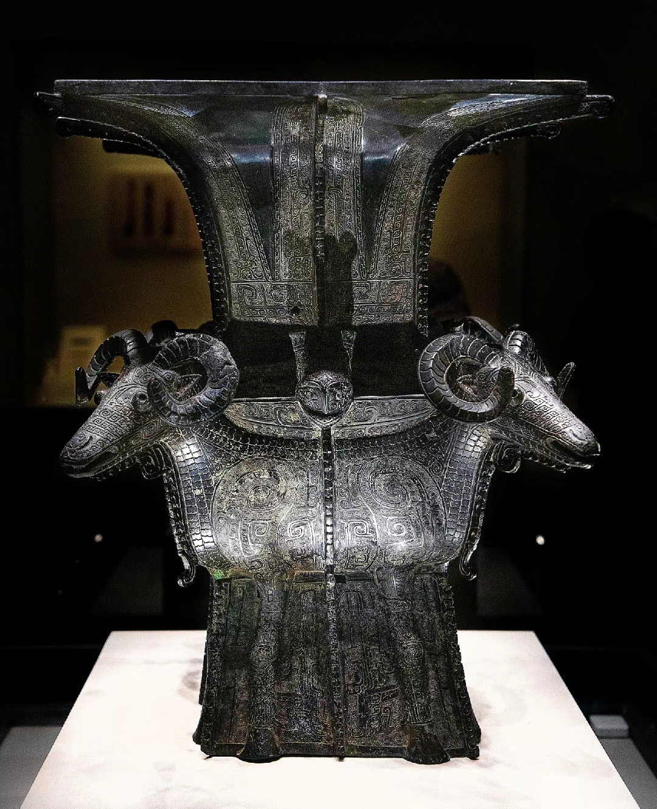
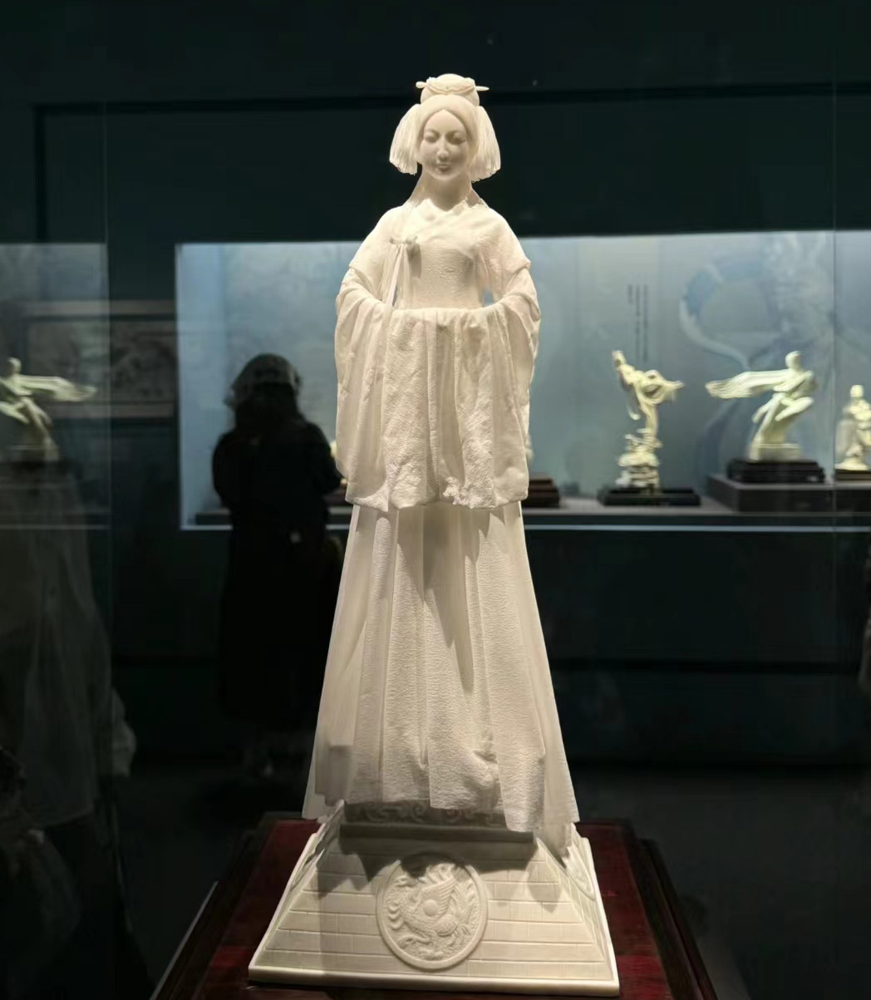
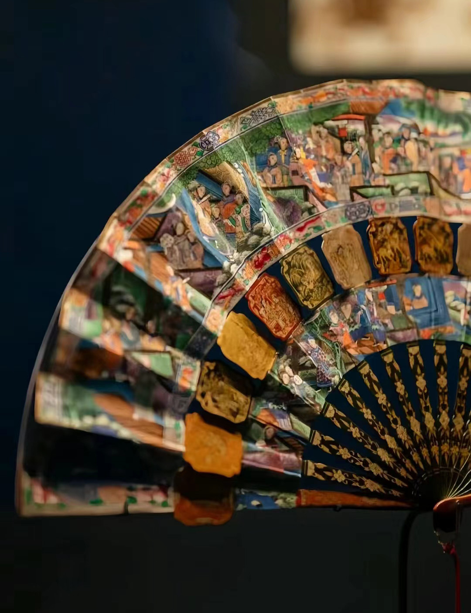
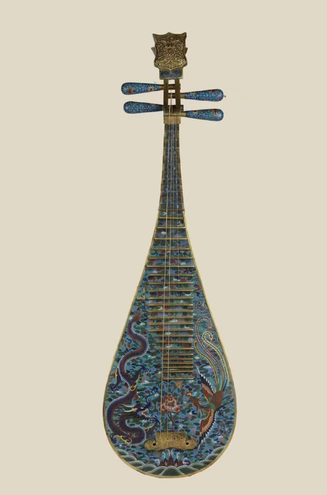
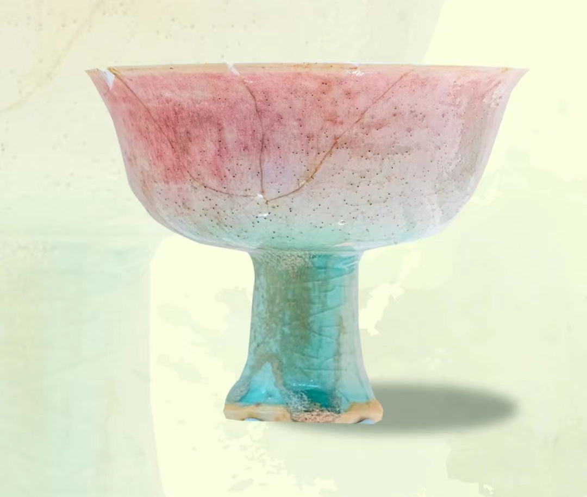
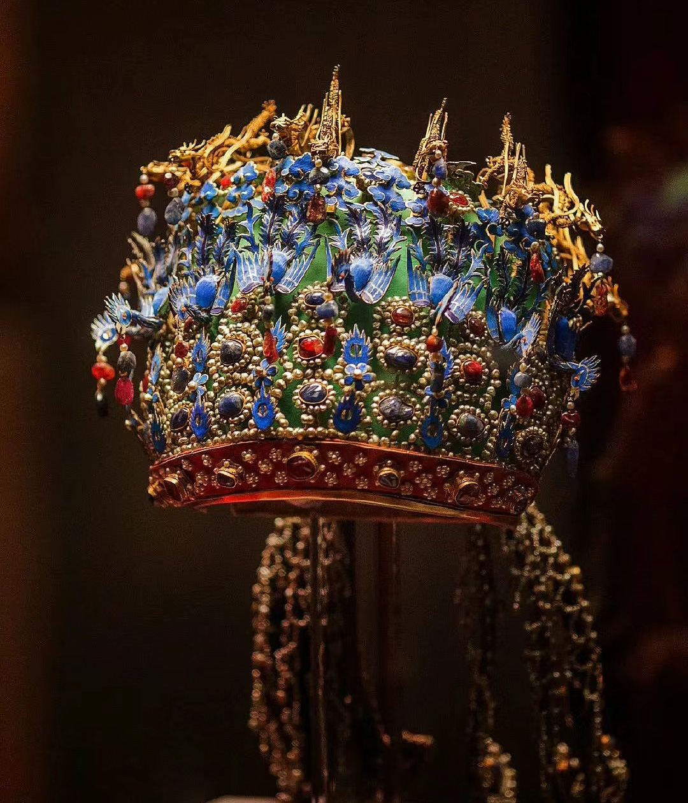

文物介绍
每天认识一个国家宝藏👇
商·四羊方尊
商四羊青铜方尊是中国现存商代青铜方尊中最大的一件，肩、腹部与足部作为一体被巧妙地设计成四只卷角羊。通体饰有细密云雷纹，颈部饰有蕉叶纹和带状饕餮纹。
世界白瓷之母
远看是纱，近看是还是纱，那样的裙摆，那样的发...都是瓷，通体薄如蝉翼。
晚清·十三行四层纸扇
明亮的水粉画和五彩镀金的漆器骨架组合展示了中国工匠巧夺天工的精湛工艺。清代十三行扇子的制作工艺非常讲究，包括雕刻、刺绣、彩绘等多种工艺。其中，雕刻工艺尤为出色，如象牙扇骨上的精细雕刻，以及扇面上的金漆彩绘等。这些精美的工艺使得十三行扇子成为了清代宫廷和民间都喜爱的艺术品。
清·铜胎景泰蓝掐丝珐琅琵琶
此四弦琵琶铜胎，通体施掐丝珐琅技法。琵琶山口向后弯曲，琴头开窗，鎏金浅线阴刻宝相花装饰，曲线优美流畅，做工精细。琴轸置于琴头两侧，打洼瓜棱状弦轴，造型古朴别致。琵琶通体施浅蓝色珐琅釉地，面板满饰祥云纹，两侧及底部饰龙凤纹、海水江崖纹饰;背部饰缠枝莲纹，夔龙、鸾凤纹点缀其间，下部如意形开窗，内山水楼宇图，远处白云飘飘，近处碧波荡漾，亭台错落，动静结合，颇有意境。
元·影青釉里红高足杯
影青釉里红高足瓷杯外形像个蘑菇，“苗条”的身体上托着一个“大头”，这种“碗”+高柄组成的高足杯，是元代常见的酒杯。这件高足杯全身施青白釉，“大头”中隐约透着红色，仿佛涂了腮红，“色号”--釉里红。“标准版釉里红”应该是一个图案，而这件影青釉里红高足瓷杯却是渐变的“腮红”。据研究或许是工匠在烧造过程中，没掌握好火候和温度，导致色彩晕散，原本釉下彩绘的图案晕成了一个渐变色，成了不可复制的美丽“腮红”
明·九龙九凤冠
该冠是用漆竹扎成帽胎，面料以丝帛制成，前部饰有九条金龙，口衔珠滴，下有八只点翠金凤，后部也有一金凤，共九龙九凤。该冠共嵌未经加工的天然红宝石115块，珍珠4414颗。金凤凤首朝下，口衔珠滴。珠滴可以在走动的时候，像步摇那样随步摇晃。翠风下有3排以红蓝宝石为中心的珠宝钿，其间点缀着翠兰花叶，冠底部有翠口圈，上嵌宝石珠花，，后侧下部左右各饰点翠地嵌金龙珠滴三博叠，博上嵌镂空金龙费，珠花璆珞，似金龙奔腾在翠云一之上，翠凤展翅翱翔于珠宝花丛之中，金翠交辉，富丽堂星。
